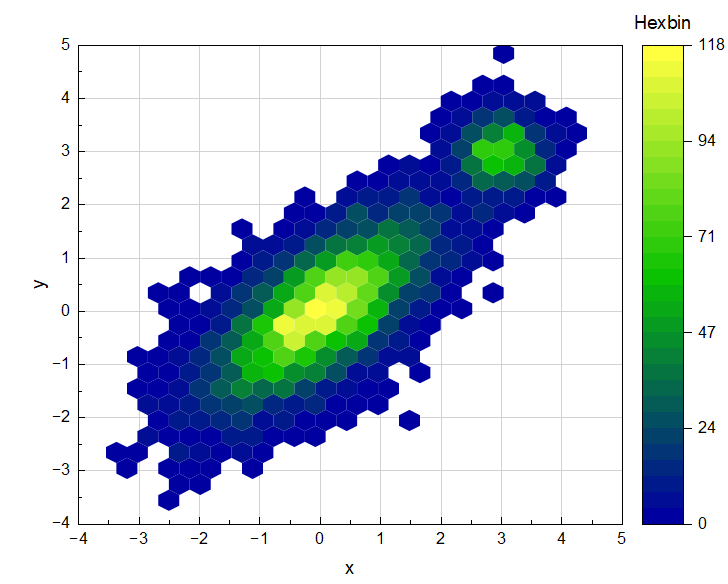
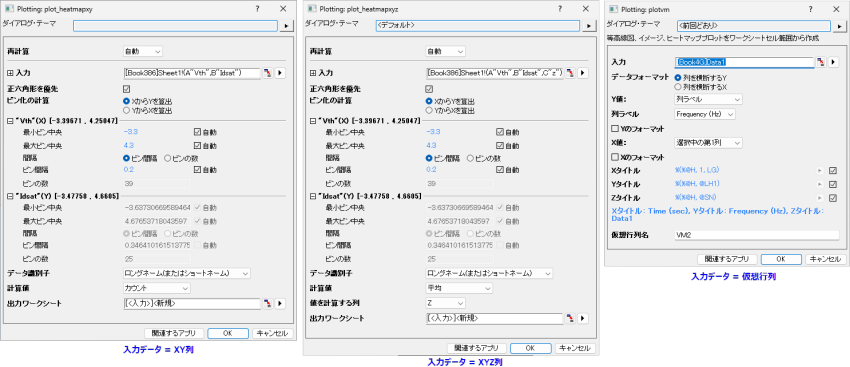

六角形ビンプロット
Hexbin-Plot

要求されるデータ
XY列/XYZ列/仮想行列（ワークシートセルのブロック）/行列を選択して六角形ビンプロットします。
グラフ作成
データを選択します。
メニューから、を選択して、plot_heatmapxy、plot_heatmapxyz、またはplotvmダイアログを開きます。
入力データが行列シートの場合、ダイアログは開かず、六角形ビンプロットが直接作成されます。

六角形ビンの特殊コントロール
正六角形を優先
このオプションはデフォルトで選択されており、正方形のレイヤフレーム（縦横比 1:1）の場合にのみ機能します。レイヤフレームの縦横比を変更した場合は、以下の式を使用して値を計算する必要があります。
- Xのビン数 = ( sqrt(3) * Yのビン数 ) * (レイヤの幅 / レイヤの高さ)
- Yのビン数 = ( Xのビン数 / sqrt(3) ) * (レイヤの高さ / レイヤの幅)
XからYを算出とYからXを算出の2つのラジオボタンがあります。
- 正六角形を優先が選択されている場合、ラジオボタングループが有効になります。それ以外の場合は無効になります。デフォルトではXからYを算出が選択されます。
- XからYを算出を選択した場合：Xのビン分割を維持し、Yのビン分割を次の式：new_ny = int(round(nx / sqrt(3)))で算出します。最小中心、最大中心、ビン間隔、ビン数を含むYのビン分割オプションは無効になります。
- YからXを算出を選択した場合：Yのビン分割を維持し、Xのビン分割を次の式：new_nx = int(round(ny * sqrt(3)))で算出します。
最小中心、最大中心、ビン間隔、ビン数を含むXのビン分割オプションは無効になります。
テンプレート
Hexbin.OTPU（Originのプログラムフォルダにインストールされています）
ノート
六角形ビンプロットはヒートマップの一種で、ビンを六角形で表した2次元ヒストグラムです。色は各ビン内に含まれるデータ点の数を表します。